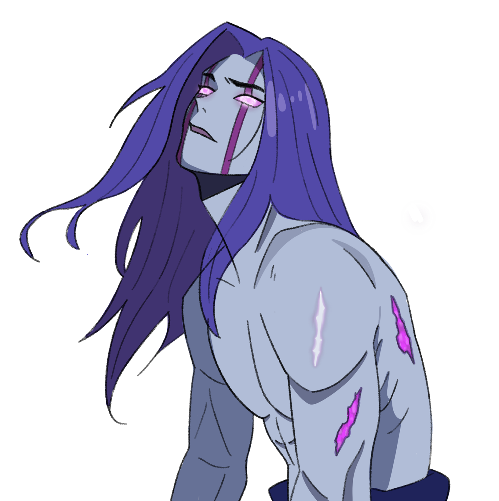

05.
PROJECT VEIL CHARACTER
Xal'vorr CC is an anomaly of immense strength and unknown origin. His presence distorts the space around him, making him feel less like a person and more like a force.
ROLE
